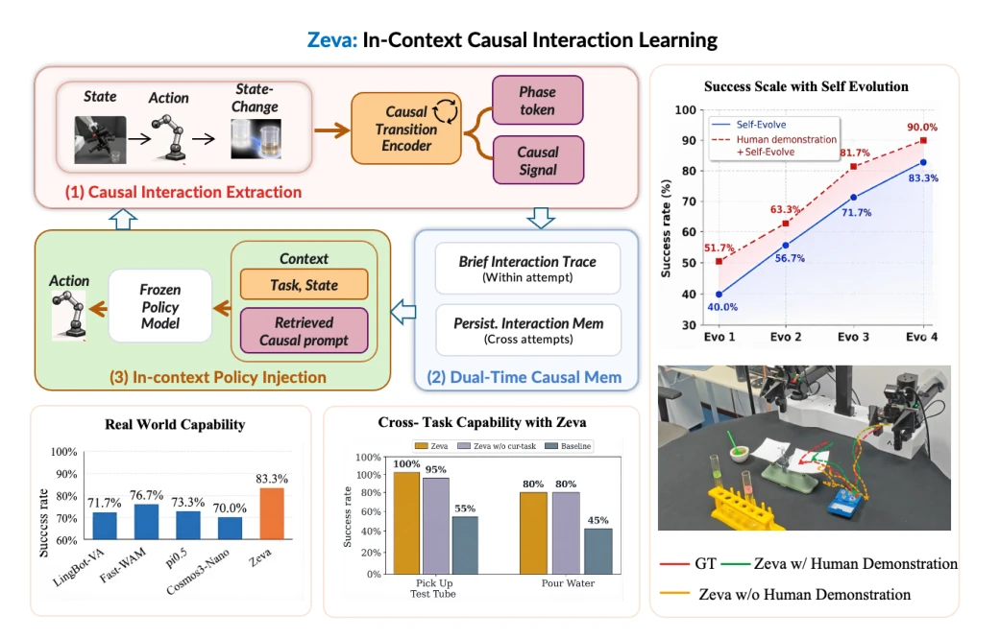
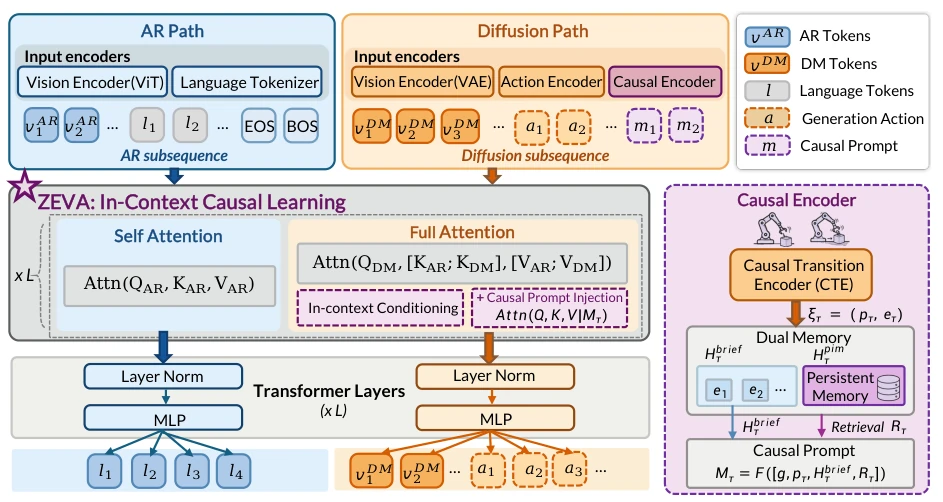
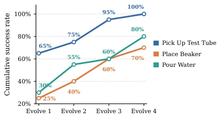
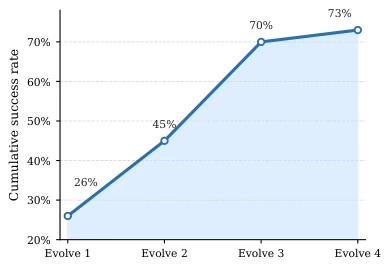
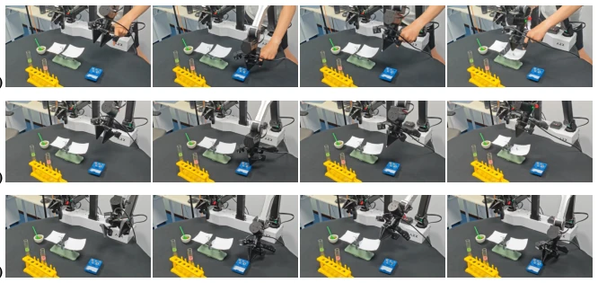
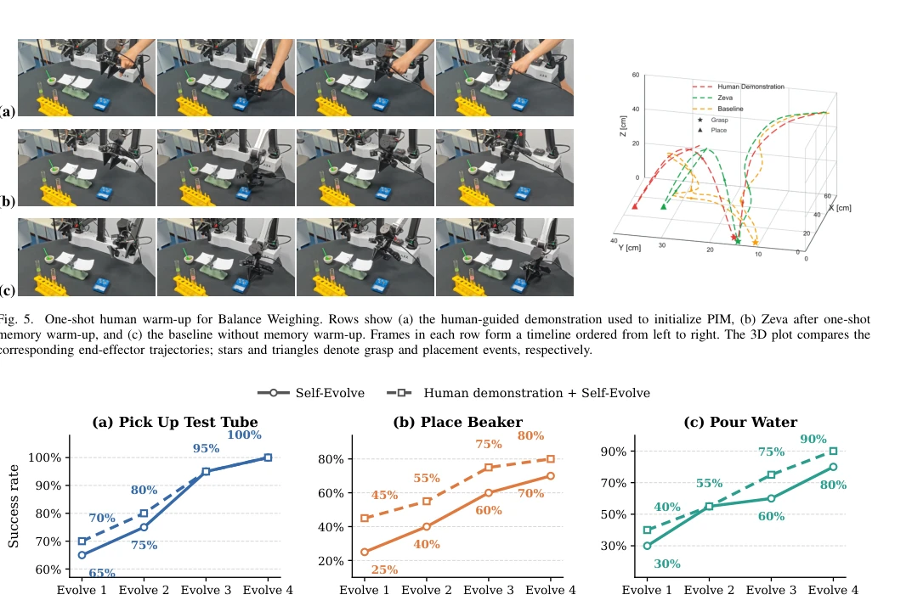
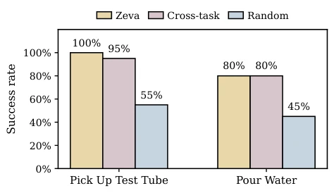
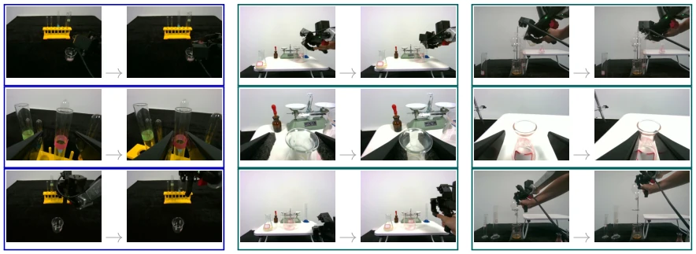
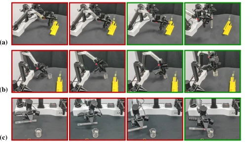

The name "Zeva" is quite evocative, attempting to let the frozen policy model evolve through "memory" rather than relying on gradient updates. This approach indeed saves compute at the deployment end, after all, no online fine-tuning is needed. It encodes actions and state changes into causal signals, stores them in dual-timescale memory, and feeds them to the policy as context. In terms of results, both simulation and real-world robots outperform baselines, especially the success rate surges after repeated attempts, which is quite appealing. But don't get too excited, it essentially relies on "trial-and-error" to accumulate memory, lacks active exploration, and might still be confused when encountering unseen physical properties. Moreover, it relies on a powerful base model (Cosmos3); if the base model itself is inadequate, this memory module cannot save it. Overall, it is a pragmatic patch for VLA deployment adaptation, but still far from true "autonomous evolution". Additionally, while human demonstration warm-up is effective, it limits full autonomy. Although this "contextual causal learning" concept is new, the core remains memory retrieval, and whether it counts as true "learning" is debatable.
Embodied operation generalization is difficult because pre-training cannot cover the physical diversity of the real world, such as new object geometries or contact dynamics. Existing methods either rely on test-time gradient updates like RoboTTT [10] and WAM-TTT [11], which are slow and prone to collapse; or like GEN-1.5 [12] and Skild S1 [13], only doing task generalization without learning interaction causality. The authors believe robots must learn causality from their own physical interactions during deployment and apply it to subsequent actions, without updating weights. This solves the problem of pre-trained models being "maladapted" in real deployment and unable to adapt quickly to new environments, representing a key step towards general embodied intelligence.

Fig. 1. Zeva enables self-evolving embodied intelligence through In-Context Causal Learning (ICCL). Zeva learns the causal relationships between robot actions and resulting state changes by extracting action-induced causal transitions, maintaining dual-timescale interaction memory, and retrieving causal context for in-context policy adaptation. Without parameter updates, Zeva enables frozen policies to progressively improve through self-evolution and human-guided experience injection, achieving strong real-world performance and cross-task knowledge transfer beyond task-specific demonstrations.
The core of the Zeva framework is In-Context Causal Learning (ICCL), with policy parameters frozen throughout the entire process. First, the Causal Transition Encoder (CTE) integrates visual latent variables, action encodings, and observed state changes into causal interaction states, projected into task stage Tokens and causal interaction signals, ensuring the signals contain physical causality. Second, Dual-timescale Causal Memory manages memory: Brief Interaction Trace (BIT) stores sliding window signals within the most recent attempt, providing immediate local context; Persistent Interaction Memory (PIM) merges similar experiences across attempts via similarity thresholds, retaining useful evidence. Finally, In-Context Policy Injection retrieves relevant evidence from PIM based on the current stage, constructs a Causal Prompt, and injects it into the base model's attention layer. This allows the policy to implicitly adjust action strategies based on historical interaction feedback, achieving gradient-free self-evolution. Additionally, CTE training includes multi-objective losses such as causal effect prediction and task clustering to ensure representation quality.

Fig. 2. Detailed architecture of the Zeva framework. Zeva integrates causal interaction intelligence into a frozen foundation policy through three main components: (1) Causal Transition Encoder, which maps action-effect pairs into latent causal signals; (2) Dual-timescale Causal Memory, consisting of a Brief Interaction Trace (BIT) for within-attempt dynamics and a Persistent Interaction Memory (PIM) for cross-attempt experience; and (3) Causal Prompt Injection, where retrieved phase-matched evidence is injected into the Transformer’s self-attention layers as an in-context prompt to guide the Diffusion-based action generation.
Tested on RoboCasa365-Atomic5 simulation and ChemLab-Evo real-world chemistry experiments. Baselines include LingBot-VA, Fast-WAM, π0.5, etc. Metrics look at Success Rate (SR) and Process Score. Zeva achieves an average success rate of 76.8% in simulation and is optimal across all difficulty levels in real-world robots. The key finding is that success rate improves cumulatively with the number of attempts (from 26% to 73%), proving self-evolution is effective. Ablation experiments show that both BIT and PIM are indispensable; removing either leads to a significant performance drop. Additionally, a single human demonstration warm-up can improve performance by 15%, and causal signals support cross-task retrieval; replacing them with random signals causes a sharp performance drop.

Fig. 4. Post-deployment capability scaling on three ChemLab-Evo tasks using separately selected fixed episodes. Evolve 1–4 denote selected evolution milestones.

Fig. 3. Post-deployment capability scaling on RoboCasa365. Each of the five tasks contributes 20 randomized episodes, yielding 100 equally weighted task–seed pairs. Evolve 1–4 denote selected evolution milestones.

Fig. 5. One-shot human warm-up for Balance Weighing. Rows show (a) the human-guided demonstration used to initialize PIM, (b) Zeva after one-shot memory warm-up, and (c) the baseline without memory warm-up. Frames in each row form a timeline ordered from left to right. The 3D plot compares the corresponding end-effector trajectories; stars and triangles denote grasp and placement events, respectively.

Fig. 6. One-shot human-demonstration warm-up on three atomic ChemLab-Evo tasks. Each evaluated fixed episode is paired with one task-matched human demonstration before autonomous self-evolution. Solid lines show self-evolution without warm-up, while dashed lines show human warm-up followed by self-evolution. Each panel uses its own y-axis range to keep within-task changes legible.

Fig. 7. Quantitative replacement with cross-task causal interaction signals on ChemLab-Evo. Zeva uses the retrieved task-local interaction signal, Cross- task substitutes its nearest counterpart from another task, and Random uses a randomly selected interaction signal from the same cross-task pool. The frozen policy and all other inputs remain unchanged.

Fig. 8. Cross-task retrieval in the latent space of CTE causal interaction signals. Each block shows a left-to-right state transition. Blue outlines denote queries, and teal outlines denote their two nearest cross-task matches. Rows group transitions by physical effect despite changes in objects, viewpoints, and instructions.

Fig. 9. Chronological post-deployment evolution on three ChemLab-Evo tasks. Red frames are terminal observations from distinct failed attempts. Green frames show the subsequent successful attempt; in (a) and (b), the two green frames are successive stages of the same continuous attempt.